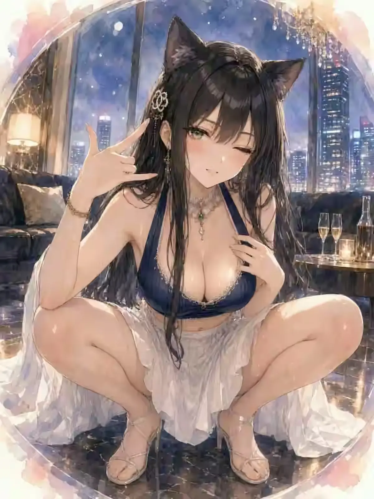

VISITOR 04 / CHARACTER FILE
KUROHAMIO
黒羽ミオ
EMERALD NIGHT FELINE
猫耳と長い黒髪、片目のウインクが印象的な夜景好き。
上品な雰囲気の中に小悪魔っぽい遊び心を隠していて、相手をからかうのが好き。都会の灯りを眺めながら過ごす時間を何より楽しむ。
ELEGANTEMERALDCATNIGHT CITY
THEME COLOREmerald Night
FAVORITE PLACE高層階の窓辺
MOTIF猫・夜景・エメラルド
04
FOURTH VISITOR